Monitoring devices¶
The exact set of devices depends on what your server reports. Nothing is created for hardware the iDRAC does not describe, and a sensor that reports no reading produces no device at all, rather than a device reading zero.
Note
Screenshots here use the Machinon theme. Device names and values are identical on the stock theme; only the presentation differs.
Every non-temperature device the plugin created for one PowerEdge, on Domoticz's Utility tab:
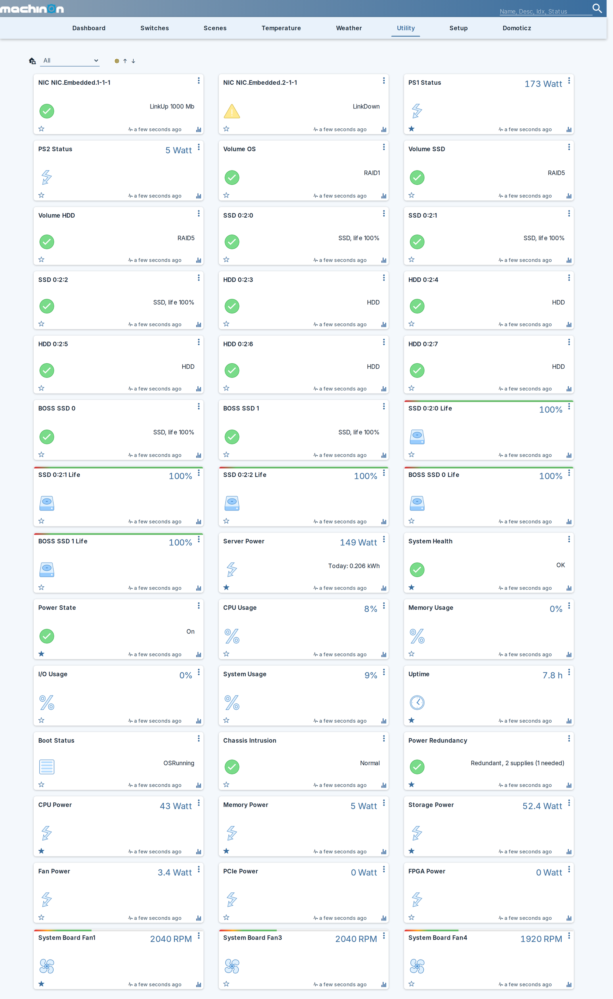
What you can expect to see¶
The example values below come from that same machine: a tower PowerEdge with three fans, two power supplies, three RAID volumes, two NIC ports and ten drives. Yours will differ in the per-hardware rows, because those follow what your server has. Fans, drives, volumes and NICs are re-discovered on every slow poll, so hardware you add later appears on its own.
Power supply, per-component power and GPU power devices read as kWh counters by default, carrying both a live watt figure and an accumulating total, the same way Server Power always has. Turn off Energy counters to get plain watt gauges instead, the way earlier versions of the plugin worked.
Always, where the server reports the value¶
| Device | Domoticz type | Example reading |
|---|---|---|
| Server Power | kWh | 160 Watt, plus a kWh counter such as 0.176 kWh |
| System Health | Alert | OK in green, or the iDRAC's own fault text such as Power supply redundancy is lost. in red |
| Power State | Alert | On in green, Off in grey |
| Inlet Temp | Temperature | 27.0 C |
| Exhaust Temp | Temperature | 34.0 C |
| CPU Usage | Percentage | 8% |
| Memory Usage | Percentage | 0% |
| I/O Usage | Percentage | 0% |
| System Usage | Percentage | 9% |
| Uptime | Custom, hours | 7.4 h |
| Boot Status | Text | OSRunning |
| Chassis Intrusion | Alert | Normal in green |
| Power Redundancy | Alert | A/B Grid Redundant, 2 supplies (1 needed) |
One per piece of hardware found¶
| Device | Domoticz type | Example name and reading |
|---|---|---|
| CPU temperature, one per socket | Temperature | CPU1 Temp reading 53.0 C |
| Hottest DIMM | Temperature | Max DIMM Temp reading 42.0 C |
| Fan speed, one per fan | Custom, RPM | System Board Fan1 reading 1920 RPM |
| Power supply, one per PSU | kWh | PS1 Status reading 150.5 Watt, plus a kWh counter such as 0.313 kWh, with the health the server reports in its description, OK or Critical |
| RAID volume, one per virtual disk | Alert | Volume OS reading RAID1 |
| Physical drive, one per disk | Alert | SSD 0:2:0 reading SSD, life 100%, or HDD 0:2:3 reading HDD |
| NIC port, one per port | Alert | NIC NIC.Embedded.1-1-1 reading LinkUp 1000 Mb, or LinkDown in amber |
Optional, off by default¶
| Device | Domoticz type | Example | Turned on by |
|---|---|---|---|
| Drive life, one per drive that reports it | Percentage | SSD 0:2:0 Life reading 100% |
Drive life % devices |
| Power Control | Selector switch | Idle, then the action you pick |
Allow Control |
| Identify LED | Switch | Off |
Allow Control |
Only where the iDRAC licence allows it¶
| Device | Domoticz type | Example reading |
|---|---|---|
| CPU Power | kWh | 51 Watt, plus a kWh counter such as 1.204 kWh |
| Memory Power | kWh | 5 Watt, plus a kWh counter such as 0.118 kWh |
| Storage Power | kWh | 57.8 Watt, plus a kWh counter such as 1.367 kWh |
| Fan Power | kWh | 3.4 Watt, plus a kWh counter such as 0.080 kWh |
| PCIe Power | kWh | 0 Watt, plus a kWh counter such as 0.000 kWh |
| FPGA Power | kWh | 0 Watt, plus a kWh counter such as 0.000 kWh |
| GPU power, one per card | kWh | GPU Video.Slot.10-1 Power reading 39.1 Watt, plus a kWh counter such as 0.925 kWh |
| GPU temperature, one per card | Temperature | GPU Video.Slot.6-1 Temp reading 40.0 C |
On a seven-card server that is fourteen GPU devices, named by the slot each card sits in. See Per-component power for what unlocks these.
What it looks like when something is wrong¶
Colour comes from the Domoticz alert level, so a problem is visible on the dashboard without opening anything:
| Device | Reading | Colour | What it means |
|---|---|---|---|
| System Health | Power supply redundancy is lost. |
red | The iDRAC has raised a fault and this is its own wording |
| System Health | Critical: PS, SEL |
red | A fault is raised but the iDRAC gave no message, so the affected subsystems are named instead |
| System Health | Unknown |
grey | Nothing is reporting health, which is normal while the host is powered off |
| PS1 Status | 0 Watt, description Critical |
A failed or unplugged supply. The watts alone mean nothing here, the description is the signal | |
| Power Redundancy | Redundancy lost |
red | The group is present and unhealthy |
| Power Redundancy | Not reported |
grey | The iDRAC dropped the group entirely, which is what pulling a supply does |
| HDD 0:2:5 | HDD, failure predicted |
amber | The drive's own SMART prediction |
| HDD 0:2:9 | HDD, life 4% |
amber | Below your Drive life warning (%) setting |
| NIC NIC.Embedded.2-1-1 | LinkDown |
amber | The port is down. A port with no link state at all reads grey Unknown |
| Power State | Off |
grey | Deliberately grey, not red: a server you shut down is not a fault |
| Power Redundancy | Not redundant (configured) |
grey | Redundancy is switched off on the server, so the missing group is intended rather than a fault |
Four of those, as they actually appear:

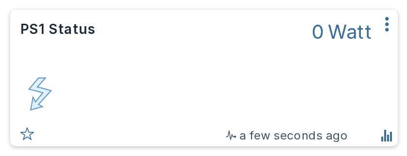
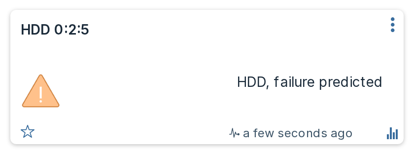
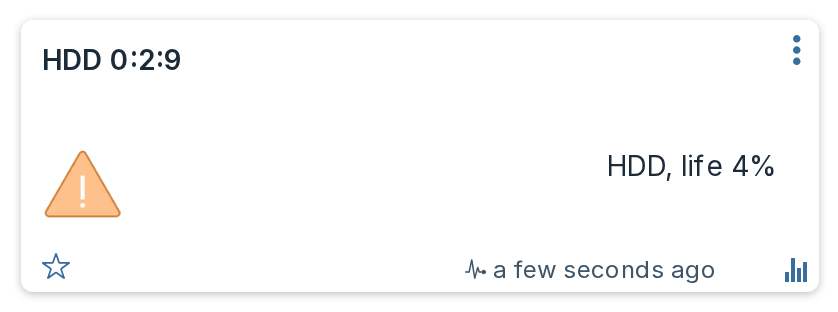
Storage device names and options¶
Drive names¶
Dell names drives differently depending on which controller they sit behind, which reads badly when both appear in one list: a PERC calls a drive Solid State Disk 0:2:0 while a BOSS boot card calls its pair SSD 0 and SSD 1. The plugin shortens the long form and marks the boot card, so you get SSD 0:2:0, HDD 0:2:3 and BOSS SSD 0.
A drive in pass-through mode keeps that qualifier, because it says something real about how the disk is attached: NonRAID Solid State Disk 0:1:0 becomes NonRAID SSD 0:1:0 rather than losing the word.
NVMe drives are named as such. Dell reports one with MediaType: SSD, exactly like a SATA disk, and calls it PCIe SSD in Slot 23 in Bay 2; only the bus protocol distinguishes the two. Where the server reports a PCIe or NVMe protocol, the plugin uses NVMe in Slot 23 in Bay 2 instead. The rename is driven by the reported protocol and never by the name, so a drive that merely reads like a PCIe device but is attached by SAS keeps the name the server gave it.
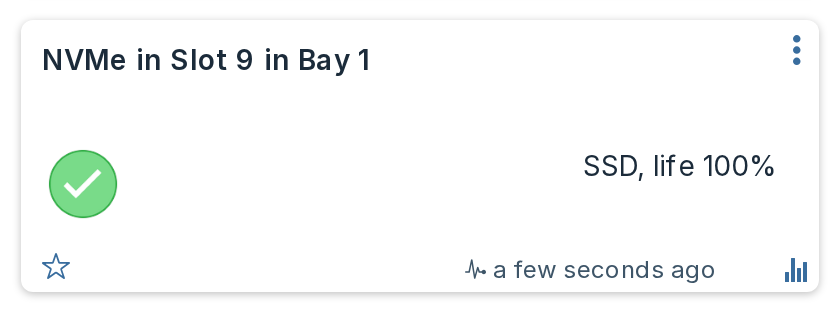
The media type comes from the server, so a bay holding a mix stays correctly labelled. A drive whose name is not one of Dell's known forms is left exactly as the server reports it.
Drive life devices¶
Switching on Drive life % devices in Settings adds a second device per drive, named after the drive with Life appended, reporting predicted media life as a percentage. It exists because the drive's own tile is an Alert, and Domoticz will not graph an Alert, so without it the life figure is readable but never plotted.
It is off by default, and only drives that report a life figure get one, which in practice means SSDs. Each one carries a bar that turns red below your Drive life warning (%) setting.
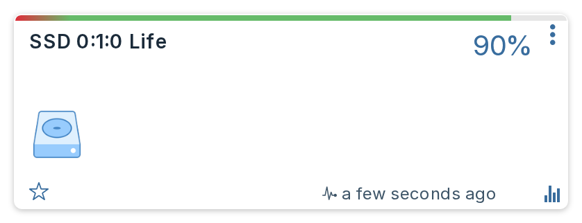
The same device for an NVMe drive, which reports life just as a SAS or SATA SSD does:
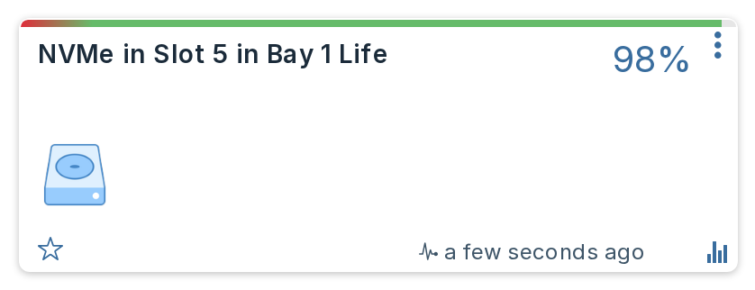
Thresholds in the description¶
Temperature and fan devices carry the server's own warning and critical thresholds in the device description, so you can see the limits without looking them up:
Inlet Temp warning below 3 C; critical below -7 C; warning above 33 C; critical above 42 C
System Board Fan1 warning below 840 RPM; critical below 480 RPM
CPU1 Temp critical below 3 C; warning above 83.3 C (estimated); critical above 98 C
A threshold marked (estimated) was not reported by the server. The plugin derives it from the critical threshold so a warning band exists at all. Reported values are never labelled this way, so an estimate can never be mistaken for something the server actually said.
A sensor the server publishes no thresholds for gets no description at all, rather than an invented one. Max DIMM Temp is commonly one of those.
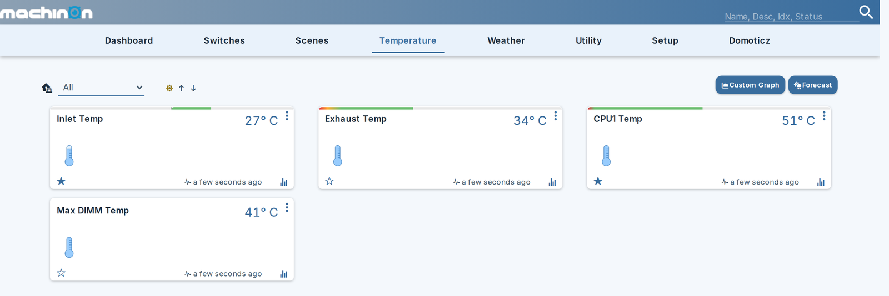
Max DIMM Temp above is the one without a bar or a description: this server publishes no thresholds for it, so there is nothing to draw.
Bar graphs¶
Where the server reports thresholds, they also become a coloured bar across the top of the device card, so the safe band is visible at a glance instead of being read out of the description text.
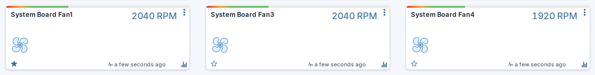
Three kinds of device get one:
| Device | Bands drawn from |
|---|---|
| Fans | Red below the critical speed, amber up to the warning speed, green from there to the fan bar maximum you set. |
| Temperatures | The server's own lower and upper critical limits, with amber warning bands where it reports them. Only sensors that report both critical limits get a bar, because those two define the axis. |
| Drive life | Red below your Drive life warning (%) setting, green above it, on the 0 to 100 axis a percentage inherently has. |
Nothing else gets a bar. Utilization percentages, power supply wattage, the per-component power devices and the energy counter carry no server-reported thresholds, so any bands there would be invented rather than measured.
A synthesized threshold is never drawn. The description labels an estimated warning limit (estimated), but a coloured band carries no label, so drawing one would present a guess as a reported limit. That is why the description and the bar can legitimately disagree on a sensor whose warning threshold the server omits.
Bar graphs need a beta or development Domoticz build
They rely on a plugin being able to write the Color field (domoticz/domoticz#6968, merged 19 August 2026). That fix is not in any stable release yet, 2026.3 included, so on a stable build Domoticz discards the value, the cards show no bar and nothing is logged. Everything else on this page is unaffected.
Your own bands are safe
Bands are written when a device is created, and refreshed afterwards when the underlying thresholds or your settings change. That refresh only happens while the bands are still the ones the plugin last wrote. Edit a device's bar by hand and the plugin stops touching it, the same rule it follows for names and icons.
Per-component power (needs a licence)¶
Dell can break system power down by subsystem, and where it is available the plugin creates six more devices:
| Device | Metric |
|---|---|
| CPU Power | TotalCPUPower |
| Memory Power | TotalMemoryPower |
| Storage Power | TotalStoragePower |
| Fan Power | TotalFanPower |
| PCIe Power | TotalPciePower |
| FPGA Power | TotalFPGAPower |
Typical idle figures on a well-populated tower server: CPU 51 W, storage 58 W, memory 5 W, fans 3.4 W. The storage figure is often the surprise, since a full drive bay can draw more than the processor.
This needs a licence, and most machines will not have one
The data comes from Dell's telemetry service, which is licence-gated. There are two routes to it, and the plugin supports both because it selects a report by its contents rather than by its name:
- iDRAC Datacenter. Unlocks Dell's own built-in telemetry reports, including
PowerMetrics, directly on the iDRAC. - OpenManage Enterprise Advanced. Unlocks the OpenManage Enterprise Power Manager features, and it is Power Manager's own reports (
OME-PMP-Power-Aand friends) that the plugin reads on such a machine. Dell's built-in reports stay locked there and answer with a licence error, which is exactly why the report is chosen by content.
On an iDRAC with neither, the devices simply do not appear and everything else works exactly as before.
The plugin asks once per start. If the answer is no, it stops asking and logs a single line saying so, rather than wasting a request on every poll.
Switching telemetry on¶
Telemetry also has to be enabled on the iDRAC, and it is off by default. Two attributes matter: the master switch Telemetry.1.EnableTelemetry and the report itself TelemetryPowerMetrics.1.EnableTelemetry, both set to Enabled.
You can set them yourself from the iDRAC interface or with racadm, or you can switch on Configure iDRAC telemetry in Settings and let the plugin do it. That setting is off by default and is the only thing in the plugin that writes configuration to your server; it acts only when per-component power was already found to be unavailable, so it will not disturb a machine where OpenManage already owns that configuration.
Which report the metrics come from¶
Report names are not fixed. A Datacenter iDRAC serves Dell's built-in PowerMetrics, while a machine managed by OpenManage Enterprise carries the Power Manager Plugin's own reports, OME-PMP-Power-A and friends, and answers the built-in names with a licence error.
So the plugin looks at what each report on your machine actually contains, rather than at what it is called, and uses the ones carrying the metrics it needs. You do not have to tell it which licence you have.
When telemetry is available, the Server Power device also switches to reporting SystemInputPower, which is what the wall socket actually delivers, rather than the mainboard sensor. That is typically a few percent higher, for example 160 W at the wall against 144 W at the board. Note that this makes a visible step in the energy graph at the point it switches over.
Power supply efficiency¶
Where a supply reports both the AC it draws and the DC it delivers, the plugin adds a PS1 Efficiency device showing the ratio as a percentage. One per supply that reports both figures.
This is real conversion loss, not an estimate. Measured across a fleet: a PowerEdge R750 under load ran at 93.3%, while an R440 idling at 32 W managed only 75.0%. That drop is expected and is the reason the device is interesting: a switching supply is least efficient when barely loaded, so a lightly used server wastes a larger share of what it draws than a busy one.
No device appears when the figure would be meaningless, and nothing is written rather than a zero recorded:
- A supply on standby. On a grid-redundant pair the idle feed reads a few watts in and zero out. That supply is doing nothing; it is not 0% efficient.
- Too light a load. Below 25 W of input the ratio is mostly measurement granularity, because input is reported in whole watts and output in quarter watts.
- More output than input, which cannot happen and means the sensor is wrong.
A supply that never carries meaningful load therefore never gets an efficiency device at all, rather than getting one that sits empty.
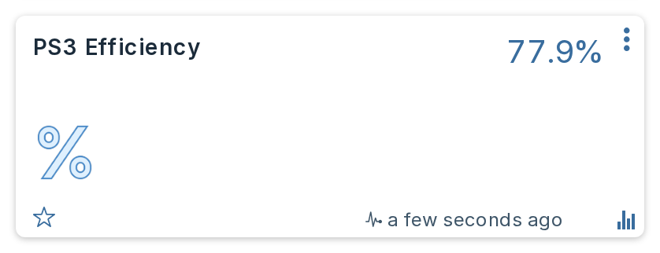
GPUs¶
Where telemetry reports them, each GPU gets a power device and a temperature device, named GPU <slot> Power and GPU <slot> Temp. Power is reported in milliwatts and converted, so a card drawing 39100 mW shows as 39.1 W.
Cards are identified by the slot the server reports, including sub-indices, so a multi-GPU card occupying one slot appears as Video.Slot.7-1 through Video.Slot.7-4 rather than collapsing into one. A card that reports only one of the two figures gets only that device.
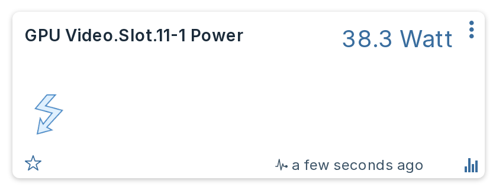
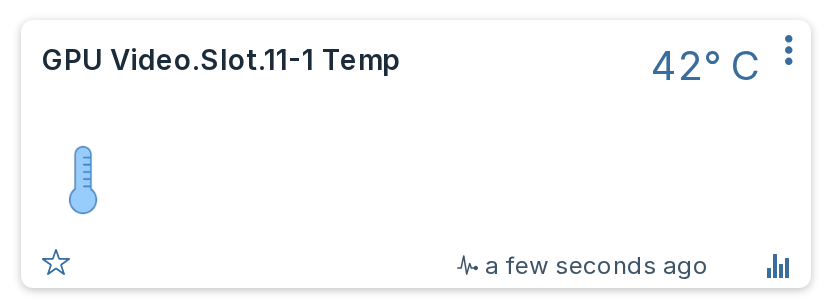
Without a telemetry licence¶
Telemetry is licence-gated, but a GPU's temperature is usually also in the ordinary sensor list, where it costs nothing. When telemetry reports no cards, the plugin falls back to any sensor the server tags with the Redfish physical context GPU and creates a temperature device from it, under the name the server gives it, such as GPU Temp 8 or System Board SLOT5 Temp.
This is a fallback, never an addition: where telemetry does report cards, these sensors describe the same hardware again, so they are ignored rather than doubling every card's temperature device.
It is temperature only. Per-card wattage still needs telemetry, because the sensor that carries GPU board power is not tagged with a physical context and could only be found by matching Dell-specific sensor ids, which would break on any other vendor.
Measured on a PowerEdge R750 whose telemetry reported no GPU at all: the fallback found a card running at 74 °C that was previously invisible.
System Health¶
This is deliberately a single tile rather than one per subsystem, because a wall of green tiles is not information.
Its level is the worst of the standard Redfish health rollup and Dell's own OEM rollups. Its text is the part that matters:
- When the iDRAC has raised a fault, the tile shows the iDRAC's own message, for example
Power supply redundancy is lost. - When there is no fault message, it falls back to naming the unhappy subsystems.
- When everything is healthy, it reads
OK.
Why the fault text matters so much
Dell's health rollups track raised faults, not instantaneous component state, so the tile can stay red for hours while every single component, both power supplies included, reports Status.Health: OK. Without the fault sentence you would be looking at a red square with nothing behind it that you could act on.
With Formatted card text on, a fault list of more than one message is shown as bullets rather than joined into one paragraph, and the card gains a link reading Open iDRAC that opens the server's own web interface in a new tab, on every state including OK:
More faults than fit end in a count, not a cut-off sentence
The card has a readability budget for fault text. Faults that fit are shown in full, and when there are more than that, the card drops whole faults rather than cutting one in half, ending with a count such as +2 more. That replaces an earlier version that joined every fault into one string and cut the result mid-sentence, which could leave half a fault on screen looking like a complete one. This applies whether Formatted card text is on or off.
Power redundancy¶
Reports the health of the redundancy group, which is a different question from whether each PSU is healthy. It can read Critical while both power supplies individually read OK, which is exactly the condition a per-component view cannot show you.
It reads in plain English rather than in Redfish terms, and it leads with the policy the server is actually configured for, for example A/B Grid Redundant, 2 supplies (1 needed). The policy, the number of supplies in the set and the number needed all come from the server. A fault reads Redundancy lost or Redundancy degraded instead: when redundancy is gone, what you need on screen is the failure, not the setting that is no longer being met.
A server that reports no policy at all, which is any non-Dell Redfish endpoint, falls back to the generic Redfish mode and reads Redundant, 2 supplies (1 needed).
With Formatted card text on, these facts are shown as bullets rather than run together on one line, and the card gains a link reading Open iDRAC that opens the server's own web interface in a new tab.
The Open iDRAC link can sit below the fold
The card's text area is a fixed height and scrolls. On Power Redundancy with three facts, the Open iDRAC link lands just below the visible area, so reaching it needs a scroll; most browsers draw a scrollbar on the card to show there is more.
Hot Spare appears on the end
With Hot Spare switched on, the iDRAC parks some supplies on standby and lets the ones you nominate as Primary carry the whole load. The device names the primaries, which is what explains a healthy set where one supply reads a few watts and another reads everything:
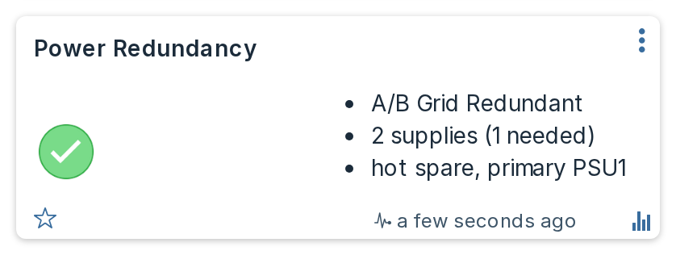
The pair it describes, on the same server at the same moment. Neither supply is faulty:
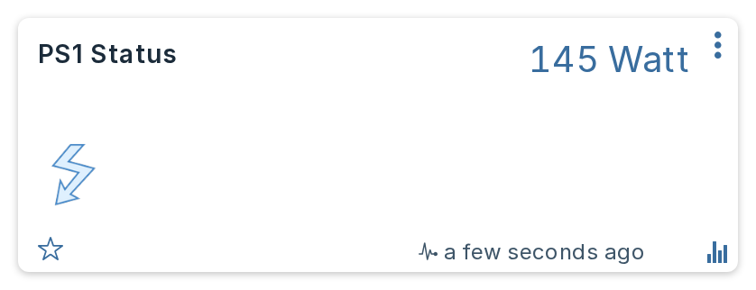
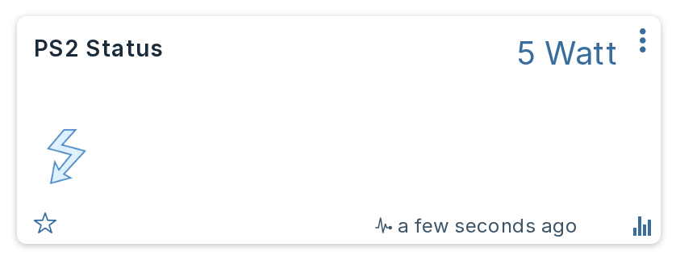
The supply named is the one carrying the load, not the one parked. Measured on a four-supply DSS8440 nominating PSU1 and PSU3: those two delivered 288 W and 307 W while PSU2 and PSU4 sat at exactly 0 W.
Hot Spare is only shown alongside a redundant policy, and even then it describes the configuration rather than proving a supply is parked. Switching it on while the policy is Not Redundant left the supplies sharing the load evenly on four servers, and the same DSS8440 under a PSU Redundant policy also shared across all four with Hot Spare still on. Only the grid policy actually parked anything on the machines measured.
When a supply fails
A failed supply is not removed from the iDRAC's inventory. It stays listed, drawing 0 W and reporting Critical, and the redundancy group stays with it and goes Critical too, so the device reads a red Redundancy lost. Verified by pulling a mains cord on a live T550: the supply went to 0 W and UnavailableOffline, and the iDRAC raised two faults, Power supply redundancy is lost. and The input voltage for the Power Supply Unit PSU.Slot.1 is not detected.
That holds whether the supply lost its input or failed outright. Taking one out of its bay reads the same way: the iDRAC keeps reporting the supply it knows about, and stays red.
Restarting the iDRAC re-inventories the chassis. If a supply is physically gone at that point, the iDRAC counts only the supplies actually present and treats that as the new normal, so the fault clears and the device goes healthy for the smaller set. Put the supply back and the next inventory picks it up again. Nothing the plugin does causes this; it reports what the server reports.
System Health carries the iDRAC's own fault text throughout, which is where the reason lives.
When redundancy is switched off
An empty redundancy group has a second, entirely benign cause: the server is configured not to be redundant, which is common on machines that need every supply delivering at once. The plugin reads Dell's own policy attribute to tell the two apart, and says so rather than leaving you to guess:
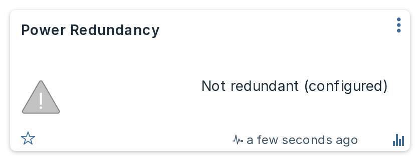
Still grey rather than green. Not redundant is an intended state, not a healthy one to advertise.
Only the first redundancy group is reported. Chassis that expose several groups will show only one. The device comes from the same payload as the power supplies, so it stops updating if you switch Power supplies off in Settings.
Energy¶
Server Power always carries both live watts and an accumulating kWh counter. With Energy counters on, which is the default, the per-component power devices, each power supply and each GPU carry the same pair of figures.
Every counter is integrated by the plugin itself, over the measured interval since its last successful poll rather than the configured poll interval, capped at twice that interval. A poll that runs late is counted for the time that actually passed rather than for the time you configured, and an unreachable iDRAC does not stamp the clock at all, so an outage is under-counted rather than having its silence booked as either a full interval of load or none.
It does not use the lifetime energy figure the iDRAC reports. That counter does not accumulate continuously: it works out to a lifetime average far below what the machine really draws, so it must pause across power-off periods or reset. Wiring it to a Domoticz counter would produce a graph with invented plateaus and sudden jumps.
The trade-off is that energy accrued while Domoticz is not running is not recovered. Every counter is guarded so it can only move forwards, and an implausibly large jump is held back and reported rather than accepted.
A component counter carries one further guard: a reading above one and a half times what the whole machine is drawing is not counted, because a component cannot draw more than the chassis it sits in. The counter is held at its last value, and the plugin logs one line per counter per plugin start rather than repeating it on every poll.
Why the component counters do not add up to Server Power¶
Each component counter measures one internal rail. Together they never account for the whole machine, and the shortfall is not a fixed proportion: measured across a fleet of eight servers the subsystem figures covered 74% of the wall draw on a T550, 79% on an R740xd2, 48% on an R440 and 18% on a DSS8440, where the GPUs carry most of the load and no subsystem metric covers them.
Metric coverage itself varies by machine: from two of the six subsystem metrics reported on a PowerEdge R750 up to all six on the T550. A metric your server does not report simply produces no device, rather than one reading zero.
Server Power is the figure to trust for the machine's total consumption and cost. The component counters are for seeing where the power goes, and for spotting a change in one part over time.
Power supply devices show input watts¶
A PSU device shows what the supply draws from the wall, which includes conversion loss, rather than what it delivers to the board.
A PSU reading near 0 W is often completely normal
On a server with Hot Spare switched on, the supplies nominated as Primary carry the load while the rest idle near zero. Wattage alone is therefore not a fault signal, and the plugin never treats it as one. Health comes from the supply's reported status and from Power Redundancy, which names the supplies carrying the load so you can tell an idle standby apart from a failure at a glance.
What tells you a supply has actually failed is System Health, which turns red and carries the iDRAC's own sentence, for example The input voltage for the Power Supply Unit PSU.Slot.1 is not detected. The supply's own description also carries the health the server reports and follows it on every poll, OK while the supply is fine and Critical when it is not. Note that Domoticz does not draw the description on the card: you see it in the device's edit dialog, in Setup then Devices, in the JSON API and from dzVents as device.description.
The idle supply also loses its PSU efficiency device while it is on standby. A supply drawing 5 W and delivering 0 W has no meaningful conversion efficiency, so the plugin reports none rather than inventing a figure.
Device naming and unit numbers¶
Each device is created with a name derived from what the server calls the component. If you rename a device yourself, the plugin leaves your name alone from then on; it only renames devices whose name it still owns.
Unit numbers are allocated once per piece of hardware and then persist. If you remove hardware, its device stays until you delete it, and its unit number is not handed to something else. This keeps scenes, timers and scripts pointing at the same thing across a drive replacement.
The plugin creates several Domoticz Devices, one per family, rather than a single one. See How it works. A unit number is unique only within its Device, so a script acting on one should match the Device as well as the number.
Icons¶
Fans get the Fan icon, Uptime the Clock icon and drive-life devices the Hard Disk icon when they are first created. If you pick a different icon afterwards, the plugin never overwrites your choice.